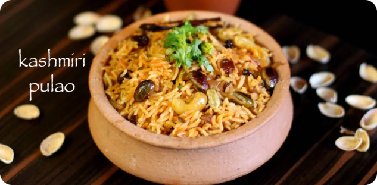
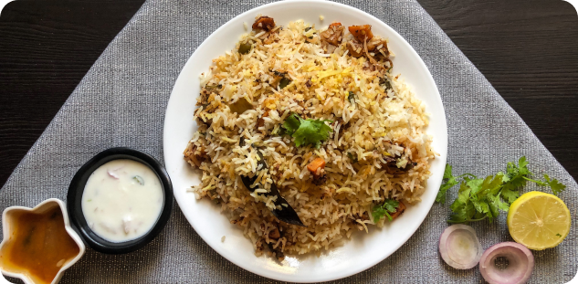

Featured Recipes

Kashmiri Pulao

Instructions:
- Firstly, in a pressure cooker add ghee and allow to melt.
- Further add cashews, raisins and pistas.
- Saute on low flame till they turn aromatic. Keep aside.
- Further add all spices and saute till the spices turn aromatic.
- Additionally add onions, green chilly, and ginger-garlic paste.
- Saute till the onions turn slightly golden brown.
- Furthermore, add chili powder and salt.
- Saute on low flame till the spices are cooked well.
- Now add soaked basmati rice for 30 minutes.
- Add 1.5 cups water and give a good stir.
- Also add saffron milk and fried dry fruits and mix gently.
- Pressure cook for 2 whistles on medium flame.
- Then once the pressure is released, gently fluff the rice.
- Finally, serve Kashmiri pulao with onion tomato raita.
Ingredients:
- 1 tbsp ghee / clarified butter
- 10 cashews / kaju, halved
- 3 tbsp raisins / dry grapes
- 1 tsp jeera / cumin seeds
- 1 medium sized bay leaf / tej patta
- 2 pods cardamom / elachi
- 1 inch cinnamon stick / dalchini
- ½ tsp pepper / kali mirch
- 5 cloves / lavang
- ½ tsp fennel seeds / saunf
- 1 medium sized onion, thinly sliced
- 1 green chili, slit lengthwise
- Salt to taste
- 1 tsp ginger-garlic paste / adrak-lasun paste
- ½ tsp Kashmiri red chili powder / lal mirch powder
- 1 cup basmati rice, soaked for 30 minutes
- 1½ cups water
- 2 tbsp saffron milk
- 2 tbsp coriander leaves, chopped
Kashmiri Pulao

Instructions:
Preparing the Rice:
- In a large pot, bring 4 cups of water to a boil.
- Add bay leaf, cinnamon stick, green cardamom, cloves, and salt.
- Add the soaked and drained basmati rice. Cook until 70-80% done (the rice should still have a bite to it).
- Drain the rice and set aside.
Marinating the Chicken:
- In a large bowl, combine chicken pieces, yogurt, ginger-garlic paste, red chili powder, turmeric powder, garam masala powder, and salt.
- Mix well, cover, and refrigerate for at least 1 hour (preferably overnight).
Cooking the Chicken:
- In a large pot or deep pan, heat ghee or oil over medium heat.
- Add sliced onions and sauté until golden brown.
- Add green chilies and ginger-garlic paste. Sauté for a minute.
- Add chopped tomatoes and cook until they turn soft and the oil starts to separate.
Ingredients:
For the Rice:
- Basmati Rice - 2 cups (soaked for 30 minutes)
- Water - 4 cups
- Bay Leaf - 1
- Cinnamon Stick - 1 inch
- Green Cardamom - 2-3
- Cloves - 3-4
- Salt - to taste
For the Chicken Marinade:
- Chicken - 1 kg (cut into pieces)
- Yogurt - 1 cup
- Ginger-Garlic Paste - 2 tablespoons
- Red Chili Powder - 1 teaspoon
- Turmeric Powder - 1/2 teaspoon
- Garam Masala Powder - 1 teaspoon
- Salt - to taste
For the Biryani:
- Ghee or Oil - 3 tablespoons
- Onions - 2 large (sliced thin)
- Tomatoes - 2 large (chopped)
- Green Chilies - 2-3 (slit)
- Ginger-Garlic Paste - 1 tablespoon
- Biryani Masala - 2 tablespoons